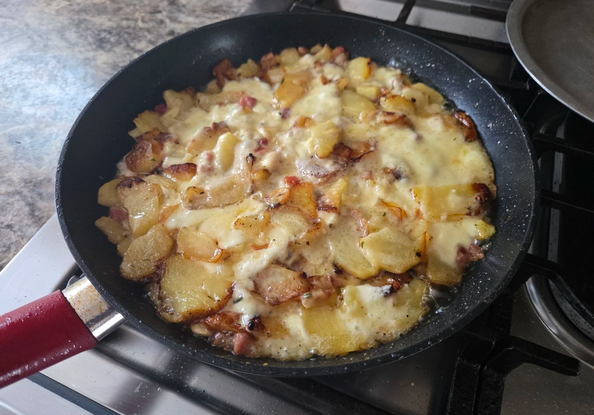

Trufade

Description
A rustic dish from France’s Auvergne region, made with golden potatoes and melted Tomme cheese, stirred together until rich and comforting.
Step by step:
- Peel and slice potatoes thinly.
- Cook in butter until soft and golden.
- Add strips of Tomme cheese.
- Stir gently until cheese melts and binds.
- Serve hot, with parsley if desired.
Home
Back